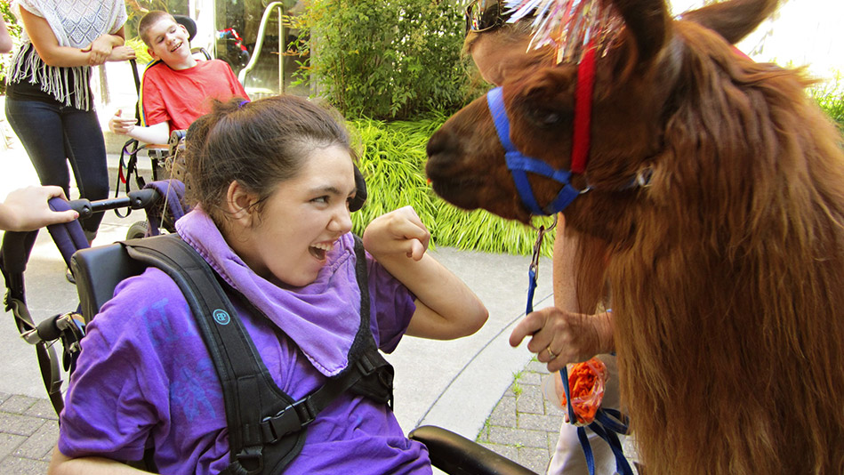
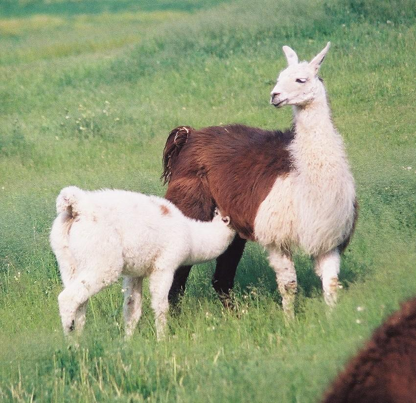

| Home | Facts | Myths |

Llama Magical Healing Power
 Llama-assisted therapy involves fun interaction among families, couples, individuals, and children.Llamas teach and model the ethics of community, commitment, family values, self-esteem, concurrent opposing feelings, and boundary setting.
Their communication is gentle, accepting, patient, and sometimes comical. They are curious and joyful creatures and break out into dance and play several times a day.
Llama-Assisted Therapy (LAT) can be helpful for children or adults who act out or have behavioral issues, and for families addressing issues of boundaries and commitment. A llama has learned how to walk away when appropriate and teaches humans how to do that without losing face. Llamas teach how to be both committed to a community, family, or herd, and also express disagreement.

Animals can help us to connect with our deepest selves.Holistic healing involves our relationships with all creatures, not just our individual selves, and just as Noah invited all species two by two into the ark, so may we work and live interspecifically to balance our society.
Llama Milk & Lactose
Like all mammals, llamas produce milk to feed their babies, known as crias. Llama milk contains more protein than cow's milk and goats milk, with 4.23 percent protein compared to 3.3 percent in cow's milk and 2.9 percent in goat's milk, according to the Alpaca Breeders of Southern California. Llama milk also contains more calcium with 1,701 ppm as compared to 1,080 ppm in cow's milk and 1,400 in goat's milk. In addition llama milk contains higher amounts of phosphorus and potassium.